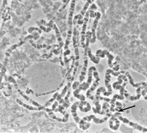
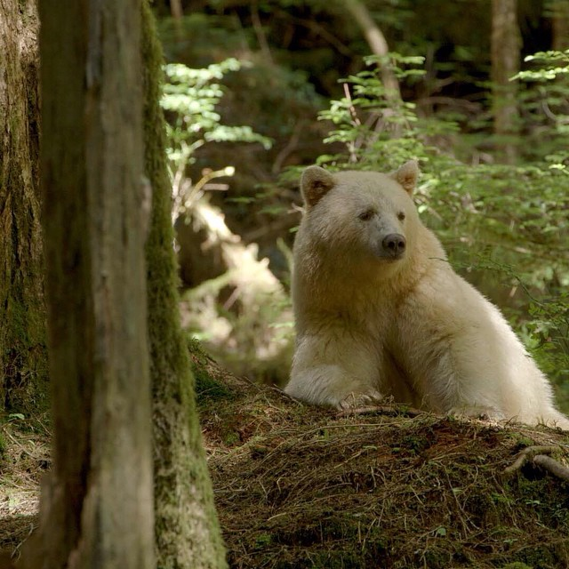
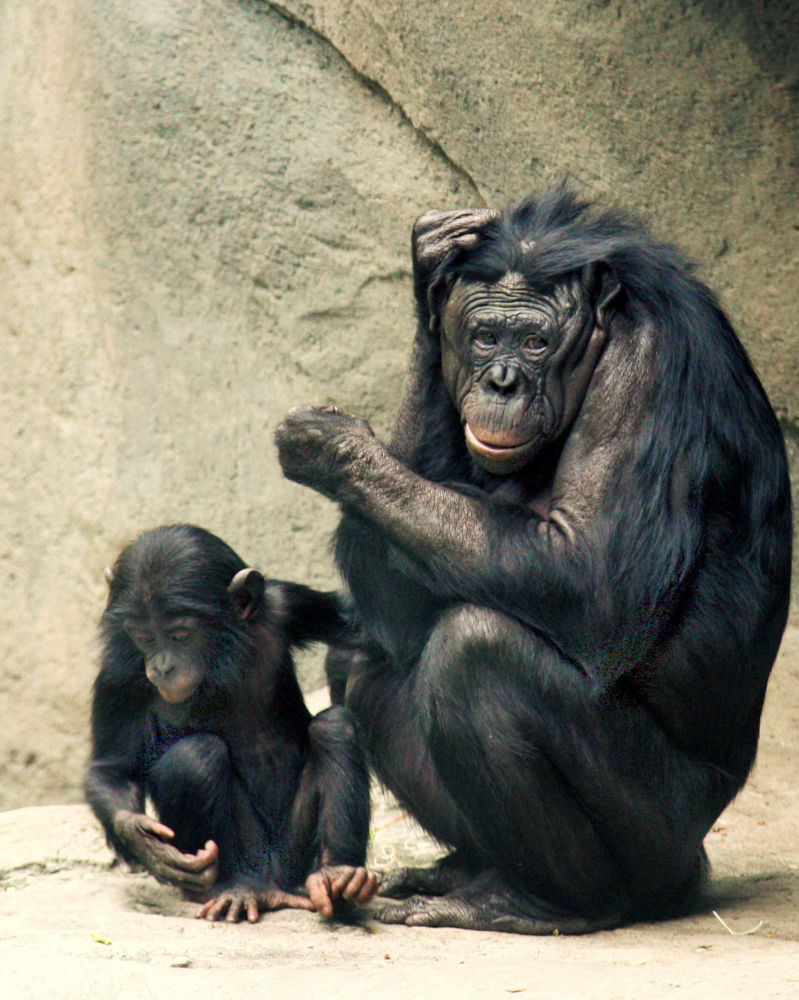

12 Population Genomics
12.1 Introduction
As first introduced in Chapter 8, population genomics typically describes a DNA resequencing project of multiple individuals from the same population of a species. As a field, population genomics brings together evolutionary theory and genome-scale data to ask how mutation, recombination, genetic drift, migration, and natural selection shape patterns of genetic variation across the genome1,2. Rather than focusing on single loci, population genomics characterizes the “genomic landscape” of diversity and differentiation, providing a richer picture of how genomes evolve in natural populations1. This chapter introduces the historical roots of population genomics, the key summary statistics and evolutionary processes that govern genomic variation, and modern genome-wide analysis strategies including sliding-window approaches, genome scans for selection, and R-based workflows for computing and visualizing statistics from genomic interval data.
The goal of this companion chapter is to provide a broad conceptual overview rather than a mathematically exhaustive treatment. Students who are interested in formal derivations and deeper theory are encouraged to consult Graham Coop’s Population and Quantitative Genetics notes2. Here, I emphasize historical context, introductions to key terminology, connections to earlier chapters (e.g., sequence analysis, variant calling, and alignment), and links to labs in which you will compute and interpret population genomic statistics using tools such as VCFtools and the R packages PopGenome and GenomicRanges.
12.2 From the Modern Synthesis to Population Genomics
12.2.1 Biological evolution and the forces of change
Evolution is the change in allele frequency over time, typically measured in the context of a genetic population. A population is made up of a set of interbreeding individuals whose collective genomes constitute its genetic composition2. This composition shifts because individuals are born and die, because some individuals migrate in or out, and because individuals vary in how many offspring they leave. These individual events seem small, but accumulation of changes across individuals and generations — compounded over millions of generations — produces the remarkable diversity of life on Earth2.
Population genetics is the study of the genetic composition of natural populations and its evolutionary causes and consequences2. Population genomics extends this to genome-wide data, asking how mutation, recombination, genetic drift, migration, and natural selection together shape patterns of variation across entire genomes1.
The five major forces that shape allele frequencies are2,3:
- Mutation: Introduces new alleles at a low rate (~\(10^{-8}\) per base pair per generation in humans); the ultimate source of all genetic variation.
- Genetic drift: Random fluctuations in allele frequencies caused by the finite number of individuals that survive and reproduce each generation; strongest in small populations.
- Migration (gene flow): The movement of individuals and their alleles between populations; tends to homogenize allele frequencies across geographic space.
- Recombination: Shuffles alleles within chromosomes during meiosis, breaking down associations between nearby variants.
- Natural selection: Non-random, directional change in allele frequencies based on differences in survival and reproduction among genotypes.
12.2.2 The modern synthesis: reconciling Mendel and Darwin
The conceptual foundations of population genomics lie in the early twentieth-century modern synthesis, which reconciled Mendelian genetics with Darwin’s theory of natural selection2. Darwin’s theory required heritable variation and differential reproductive success, but he had no mechanistic theory of inheritance. Mendel provided particulate, discrete heritable factors (what we now call alleles), but his ‘factors’ initially seemed incompatible with the continuous phenotypic variation — height, weight, skin tone — observed in nature. The breakthrough came from Fisher, Wright, and Haldane, who showed mathematically that Mendelian segregation at many loci, each with small effects, produces smooth continuous phenotypic distributions, and that changes in allele frequencies under selection follow well-defined rules2.
It is worth appreciating how conceptually remarkable this is. Many of the core models of population genetics were developed in the 1920s–1940s, before anyone knew that DNA was the molecule of heredity2. Yet these models have only grown in power and relevance as molecular data became available. This is because they are built on the logic of Mendelian transmission rules combined with probability theory — a foundation that holds regardless of the physical nature of heredity.
Fisher formalized the relationship between genetic variation and evolution in his Fundamental Theorem of Natural Selection, which links the rate of increase in mean fitness to the amount of additive genetic variance for fitness3. This synthesis laid the groundwork for connecting patterns of genetic variation in populations to the action of selection, drift, mutation, and migration. Building on these ideas came the modern evolutionary synthesis more broadly, integrating insights from paleontology, systematics, and ecology into a unified picture of how both short-term evolutionary change and the long-term diversification of life can be explained by the gradual accumulation of genetic changes within and among populations2.
Note: The goal of this section is to situate the field of population genetics in its historical context in a factual, objective way, without assigning blame or asking students to endorse any particular viewpoint.
The history of genetics and evolutionary biology is intertwined with the history of eugenics and scientific racism. Francis Galton coined the term eugenics in 1883 to describe “human improvement” through controlled breeding2,4. Eugenic thinking rested on the idea that certain groups were genetically “inferior” and that social inequalities could be justified as biological facts4,5. In the late nineteenth and early twentieth centuries, eugenicists used emerging tools in statistics and heredity to support policies restricting immigration and discouraging or preventing reproduction by people labeled “unfit”2,4. In the United States, compulsory sterilization laws disproportionately affected Black, Latino, Indigenous, poor, and disabled individuals2,6; coerced sterilization of Native American women continued into the 1970s7, California prison inmates were sterilized without lawful consent as recently as 20108, and a Tennessee judge was formally reprimanded in 2017 for offering reduced sentences in exchange for sterilization9.
Many early geneticists engaged actively with eugenics, and major scientific institutions have roots in the movement. The Cold Spring Harbor Laboratory hosted a Eugenics Record Office from 1910 to 194010, and the journal now known as Annals of Human Genetics was called Annals of Eugenics until 19542. R.A. Fisher devoted substantial sections of his landmark 1930 book to eugenic arguments2,11, and H.J. Muller framed genetic diversity in some populations as a burden to be managed through his work on mutational load12. The Mendelian framework was itself selectively distorted to support eugenic claims before geneticists pushed back on its misuse13.
At the same time, geneticists including Thomas Hunt Morgan and Lancelot Hogben criticized eugenic claims, emphasizing the importance of environment and the complexity of inheritance2. After World War II, explicit state-sponsored eugenics programs lost formal legitimacy, though coercive practices persisted for decades. Lewontin’s landmark 1972 analysis showed that roughly 85% of human genetic variation occurs within populations rather than between them2,14,15, reaffirmed many times since with larger genomic datasets. This work helped establish that human genetic differences, while real and scientifically interesting, do not map neatly onto rigid racial categories or justify treating any group as inherently superior or inferior. A concise primer on human population genomics is provided at the end of this chapter to supplement any previous coverage of this topic you may have encountered previously in your coursework.
Communicating the science behind human population genetics accurately remains an ongoing responsibility for geneticists, educators, and clinicians — including genetic counselors — who encounter genomic information in professional practice. Some groups continue to selectively misuse population-genetic results, making clear and contextualized science communication essential2,16. The field of genetic counseling itself emerged, in part, as a deliberate effort to move clinical genetics away from eugenic paternalism and toward patient-centered, non-directive care — a foundational value documented in the profession’s own history5,17.
12.2.3 The language of population genetics: loci, alleles, and frequencies
Before going further, it helps to establish the basic vocabulary of population genetics precisely, because these terms are used more carefully here than in a typical introductory genetics course.
A locus (plural: loci) is a specific position in the genome2. The different genetic variants that can occupy a locus are called alleles. If every individual in the population carries the same allele at a locus, that locus is monomorphic. If two or more alleles exist in the population, the locus is polymorphic (also called a segregating site)2.
We call the less common allele at a polymorphic site the minor allele and the more common one the major allele. We also distinguish the derived allele (the evolutionarily newer one, which arose by mutation) from the ancestral allele (the older one, typically inferred by comparison to an outgroup species)2. Because we typically work with diploid organisms, every individual carries two alleles at each autosomal locus (indicated as numbered subscripts below). The allele frequency is the proportion of all copies of the locus in the population that carry a given allele:
\[ p = \frac{2N_{11} + N_{12}}{2N}, \]
where N is simply the count of the total number of alleles based on homozygous or heterozygous genotype. From this calculation of \(p\), the frequency of the alternate allele can be simply calculated as \(q = 1 - p\)2.
12.2.4 Allozymes and the discovery of abundant molecular variation
The advent of protein gel electrophoresis in the 1960s brought the first systematic surveys of molecular genetic variation. Hubby and Lewontin, working in Drosophila pseudoobscura, and Harris, in humans, used allozyme variation to estimate heterozygosity and the proportion of polymorphic loci without pre-selecting genes known to be variable3. Their surveys were a revelation: many loci were polymorphic and individuals were heterozygous at a substantial fraction of loci, in stark contrast to the earlier view that wild populations were nearly monomorphic3.
A striking pattern emerged: levels of allozyme variation were broadly similar across species with vastly different census population sizes3,18. This helped motivate the neutral theory of molecular evolution (Kimura, 1968), which proposes that most molecular variants are selectively neutral or nearly neutral and that genetic drift, rather than natural selection, governs their frequencies2,18. Allozymes were also instrumental in formalizing population structure: Lewontin’s early applications of \(F_{ST}\) to human allozymes showed that the vast majority (~85%) of human genetic variation occurs within populations rather than between them3.
12.2.5 From allozymes to DNA sequences and the omics era
While allozymes provided a first glimpse of molecular variation, they detected only a subset of amino-acid changes and gave no information about synonymous or noncoding variation. DNA sequencing changed this. Kreitman’s 1983 study of nucleotide polymorphism at the Drosophila melanogaster alcohol dehydrogenase (Adh) locus was among the first direct views of DNA-level polymorphism in a natural population3. Drosophila was well-positioned for these early studies in part because its giant polytene chromosomes — visible in larval salivary glands Figure 12.1 — had long allowed cytogeneticists to map genes and inversions directly onto physical chromosome structure, identifying conserved chromosome arms (Muller’s elements) that would anchor genome-wide sequence comparisons19.

Polytene chromosomes arise in the salivary glands of larval Drosophila and most other insects, when chromosomes replicate repeatedly without cell division, producing a single giant structure visible under light microscopy19. The resulting banding pattern allowed cytogeneticists to assign genes and inversions to precise physical locations decades before DNA sequencing was possible. Comparison of banding patterns across species revealed Muller’s elements — large syntenic chromosome segments conserved over tens of millions of years — providing the conceptual scaffold for comparative genomics19. Recall from Lab 3 that you examined the conservation of these Muller’s elements across different species of Drosophila. Image: Wikimedia Commons, public domain.
The Adh locus illustrates the vocabulary of molecular variation clearly. Within D. melanogaster, individuals differ at some sites — these are polymorphisms. At other sites, D. melanogaster carries one allele while related species carry another — these are fixed differences2. Comparing the ratio of nonsynonymous to synonymous variants at polymorphic sites versus fixed differences forms the basis of the McDonald–Kreitman test for adaptive protein evolution3.
High-throughput sequencing then transformed population genetics into population genomics. My PhD work used 454 sequencing — now considered obsolete — in one of the first major population genomics studies20, highlighted below in Figure 12.4. Today, whole-genome resequencing of many individuals per species is routine, enabling simultaneous analysis of polymorphism and divergence across every part of the genome1. A survey of 167 species across 14 phyla by Leffler et al. (2012) showed that neutral diversity \(\pi\) ranges only about 800-fold across species — far less than census population sizes would predict — suggesting that forces beyond census size constrain genetic diversity18.
12.3 Evolutionary Processes and Genomic Patterns of Variation
Classical population genetics provides simple null models for how allele and genotype frequencies behave under specified assumptions, and population genomics extends these ideas across whole genomes. The goal in this section is to connect key statistics — \(\pi\), Tajima’s D, and \(F_{ST}\) — to the underlying evolutionary processes and to show how these forces leave recognizable signatures in genomic data1,2. Many of these statistics can be computed on genomic datasets using VCFtools (introduced in Chapter 3), which works directly with VCF files and supports sliding-window output for \(\pi\), \(F_{ST}\), Tajima’s D, and related measures.
| Statistic | Measures | VCFtools flag |
|---|---|---|
| Nucleotide diversity (\(\pi\)) | Within-population diversity | --site-pi, --window-pi |
| Watterson’s \(\hat\theta_W\) | Segregating site density | computed from --freq |
| Tajima’s D | SFS shape; drift/selection | --TajimaD |
| \(F_{ST}\) | Between-population differentiation | --weir-fst-pop |
| \(d_{XY}\) | Absolute divergence | external (e.g., pixy21) |
| LD (\(r^2\)) | Haplotype association decay | --geno-r2, --ld-window |
12.3.1 Hardy–Weinberg equilibrium: a null model for genotype frequencies
The simplest population model assumes random mating, infinite population size, and no mutation, migration, or selection. Under these conditions, genotype frequencies are entirely predictable from allele frequencies — a result known as Hardy–Weinberg equilibrium (HWE)2:
\[ P(A_1A_1) = p^2, \quad P(A_1A_2) = 2pq, \quad P(A_2A_2) = q^2. \]
We only need to assume random mating at the focal locus for these frequencies to hold2. In bioinformatics pipelines, HWE tests are also used as quality control: large-scale deviations at many loci can indicate genotyping errors or sample contamination. An excess of homozygotes can arise from inbreeding, positive assortative mating, or population subdivision (the Wahlund effect). An excess of heterozygotes can arise from disassortative mating or balancing selection2.

The Kermode’s bear, also called the spirit bear, is a subspecies of American black bear (Ursus americanus) found along the central coast of British Columbia. White coloration results from homozygosity for a recessive loss-of-function allele at MC1R — the same gene responsible for red hair in humans — making it a textbook example of a shared pigmentation pathway across vertebrates2. Estimating whether observed white:black ratios match HWE expectations is one of the most direct ways to ask whether the population is mating randomly with respect to coat color. Image: Wikimedia Commons, CC BY-SA.
Inbreeding and runs of homozygosity. When related individuals mate, offspring can inherit two copies of the same allele descended from a common ancestor (identical by descent, IBD). The inbreeding coefficient \(F\) quantifies this probability, and when \(F > 0\) genotype frequencies become:
\[ P(A_1A_1) = (1-F)p^2 + Fp, \quad P(A_1A_2) = (1-F)\,2pq, \quad P(A_2A_2) = (1-F)q^2 + Fq. \]
Inbred individuals show long genomic runs of homozygosity (ROH) — stretches where an individual is homozygous at essentially every SNP — because related parents transmit alleles in large intact blocks2. While ROH analysis is now standard in conservation and livestock genomics, methods built on ROH and haplotype homozygosity have grown considerably more sophisticated, moving beyond single-population inbreeding estimates toward comparative frameworks. Specifically, a recent metric from my lab called XP-EHH (cross population extended haplotype homozygosity) detects regions where one population shows significantly elevated homozygosity relative to another — a signature of recent local adaptation rather than genome-wide inbreeding. In our study, we applied our haplotype-based scan to compare high-altitude and low-altitude rhesus macaque (Macaca mulatta) populations, identifying a strong signal of local adaptation at EGLN122. This gene encodes a key oxygen-sensing enzyme in the hypoxia response pathway, and variants in its human ortholog are among the best-characterized examples of high-altitude adaptation in Tibetan and Andean populations22.
12.3.2 Measures of genetic variability at the sequence level
I have recorded a video explanation of how to calculate several of the measures introduced below.
Nucleotide diversity (\(\pi\)). The most widely used measure is the average number of pairwise nucleotide differences per site between two randomly chosen sequences2:
\[ \hat{\pi} = \frac{1}{L} \sum_{i=1}^{L} 2\hat{p}_i(1 - \hat{p}_i), \qquad E[\pi] = 4N_e\mu. \]
This relationship is fundamental: \(\pi\) provides a window into the product \(\theta = 4N_e\mu\), the population-scaled mutation rate1,2.
Watterson’s estimator. A complementary measure standardizes the total number of segregating sites \(S\) in the sample:
\[ \hat{\theta}_W = \frac{S}{a_n}, \quad \text{where } a_n = \sum_{k=1}^{n-1} \frac{1}{k}. \]
Both \(\hat{\pi}\) and \(\hat{\theta}_W\) estimate the same underlying \(\theta\) under the standard neutral model, but they weight variants differently. \(\hat{\pi}\) gives more weight to variants at intermediate frequency; \(\hat{\theta}_W\) gives equal weight to every segregating site including rare singletons. This difference is the foundation of Tajima’s D3.
The site frequency spectrum. Beyond counting polymorphic sites, we can examine the distribution of allele frequencies across sites — the site frequency spectrum (SFS)2. Under neutrality with constant population size, the SFS has a characteristic shape: many rare variants and fewer variants at high frequency. Deviations from this shape encode information about demographic history and selection, and the SFS underlies many modern methods for demographic inference.
12.3.3 Genetic drift and effective population size
Genetic drift is the random change in allele frequencies caused by the finite number of individuals contributing genes to the next generation2,18. The clearest consequence is loss of heterozygosity over time:
\[ H_t \approx H_0\, e^{-t/2N_e}. \]
The black-footed ferret (Mustela nigripes) is one of North America’s most endangered mammals. The last known wild population crashed to just 18 individuals in 1985, of which only 7 reproduced in captivity2. Because every living ferret descends from those 7 founders, the effective population size has been extremely small for roughly 40 years — long enough for genetic drift to substantially erode heterozygosity, as the formula above predicts. Intensive captive breeding has re-established wild populations exceeding 300 individuals, but the genetic legacy of the bottleneck persists. Image: USFWS, public domain.
The effective population size \(N_e\) is defined as the size of an idealized Wright-Fisher population that would experience the same rate of random allele-frequency change as the real population2. Population bottlenecks dramatically reduce \(N_e\): because the harmonic mean is dominated by the smallest values, even brief crashes suppress \(N_e\) far below the long-term census size. For humans, \(N_e \approx 10{,}000\)–\(30{,}000\), reflecting ancient bottlenecks including the out-of-Africa dispersal2,18.
At mutation-drift balance, expected heterozygosity is: \[ H \approx 4N_e\mu = \theta, \] the same population-scaled mutation rate estimated by \(\hat{\pi}\) and \(\hat{\theta}_W\). Diversity depends on the product of \(N_e\) and \(\mu\), not either alone.
12.3.4 Tajima’s D and departures from the standard neutral model
Tajima’s D exploits the fact that \(\hat{\pi}\) and \(\hat{\theta}_W\) estimate the same \(\theta\) under the standard neutral model but are sensitive to different parts of the allele frequency distribution. A great video explanation of Tajima’s D was recorded by my former PhD mentor, Dr. Mohamed Noor. The statistic is:
\[ D = \frac{\hat{\pi} - \hat{\theta}_W}{\sqrt{\operatorname{Var}(\hat{\pi} - \hat{\theta}_W)}}. \]
When the SFS matches neutral expectations, \(D \approx 0\). Departures are informative:
- Negative \(D\) (excess of rare variants): recent population expansion, a recent positive selective sweep, or ongoing purifying selection1,2.
- Positive \(D\) (deficit of rare variants): population bottleneck, or balancing selection maintaining alleles at intermediate frequencies1,2.
In genomic analyses, Tajima’s D is typically computed in sliding windows across chromosomes, producing a landscape of departures from neutrality that can be compared to recombination rates, gene density, and functional annotations.
12.3.5 Population structure and \(F_{ST}\)
Population subdivision is a pervasive feature of natural populations. The degree to which allele frequencies have diverged among subpopulations is measured by \(F_{ST}\)3:
\[ F_{ST} = \frac{H_T - H_S}{H_T}, \]
where \(H_T\) is expected heterozygosity in the total pooled population and \(H_S\) is average expected heterozygosity within subpopulations. Values range from 0 (no differentiation) to 1 (complete fixation of different alleles in different populations).
Under a simple split model with no subsequent gene flow: \[ F_{ST} \approx \frac{T}{T + 4N_e}, \] showing that differentiation depends on the ratio of divergence time to \(N_e\)2. Wright’s F-statistics hierarchy extends this to three levels — \(F_{IS}\), \(F_{ST}\), and \(F_{IT}\) — satisfying \((1 - F_{IT}) = (1 - F_{IS})(1 - F_{ST})\).
Among major human continental groups, genome-wide \(F_{ST}\) is typically 0.05–0.15, indicating that most genetic variation is within, not between, populations18. Within a species, \(F_{ST}\) can vary sharply along the genome: regions containing inversions or loci under divergent selection often show elevated \(F_{ST}\) compared to the genomic background, making windowed \(F_{ST}\) scans a standard first step in searching for regions involved in local adaptation1.
Beyond pairwise \(F_{ST}\): detecting hybridization with the ABBA-BABA test. \(F_{ST}\) measures how much allele frequencies differ between populations, but it cannot tell us whether gene flow has occurred between specific lineages after divergence. When three or more populations with a known tree topology are available, the D-statistic (ABBA-BABA test) detects asymmetric allele sharing inconsistent with a simple bifurcating history2. For a four-taxon topology \(((P_1, P_2), P_3, \text{Outgroup})\), labeling the ancestral allele A and derived allele B, two site patterns are informative:
- ABBA: \(P_1\) carries ancestral, \(P_2\) and \(P_3\) both carry derived.
- BABA: \(P_1\) and \(P_3\) carry derived, \(P_2\) carries ancestral.
The D-statistic is: \[ D = \frac{n_\text{ABBA} - n_\text{BABA}}{n_\text{ABBA} + n_\text{BABA}}, \] where \(D = 0\) is expected under no gene flow and \(|D| > 0\) indicates introgression2,20.
![Phylogenetic tree diagram illustrating the four-taxon ABBA-BABA test for introgression. The tree shows four taxa arranged as P1, P2, P3, and Outgroup from left to right, with a dashed horizontal arrow labeled with a question mark connecting P2 and P3 to indicate possible gene flow. Below the tree, three rows of nucleotides illustrate the three informative site patterns. The ABBA pattern is shown in red: P1 carries A, P2 carries C, P3 carries C, and Outgroup carries A, indicating that P2 and P3 share the derived allele. The uninformative pattern is shown in grey: P1 carries T, P2 carries T, P3 carries A, and Outgroup carries A, where no asymmetric sharing distinguishes the topologies. The BABA pattern is shown in blue: P1 carries G, P2 carries A, P3 carries G, and Outgroup carries A, indicating that P1 and P3 share the derived allele instead.](images/ABBA_BABA.png)
The ABBA-BABA test uses the four-taxon topology \(((P_1, P_2), P_3, \text{Outgroup})\) to detect gene flow between \(P_2\) (or \(P_1\)) and \(P_3\) after divergence. Under a strictly bifurcating history with no gene flow, incomplete lineage sorting (ILS) produces ABBA and BABA sites at equal frequency, so \(D \approx 0\). The test was first applied genome-wide to Drosophila pseudoobscura and D. persimilis20 and later used to quantify Neanderthal admixture in modern human populations23. Figure modified from Kulathinal et al. (2009)20.
12.3.6 Recombination, linkage disequilibrium, and linked selection
Recombination each generation breaks down associations between alleles at different loci. The degree of non-random association between alleles is called linkage disequilibrium (LD):
\[ D_{AB} = p_{AB} - p_A p_B, \qquad D_t = (1 - c)^t D_0. \]
In practice, LD is summarized using \(r^2\), the squared correlation of allele states between loci1.
Estimating recombination rates from LD. Because LD decays faster where recombination is more frequent, the rate at which \(r^2\) falls off with physical distance provides a statistical signal of the local recombination rate24. Population-genetic methods exploit this signal across thousands of SNP pairs simultaneously to produce fine-scale recombination rate maps — estimates of the recombination rate in units of cM/Mb at high resolution across the entire genome24. These maps also enable an important conceptual refinement: windows can be defined in physical distance (bp) or genetic distance (cM). Because drift, selection, and coalescence times are governed by the number of recombination events rather than the number of base pairs, genetic-distance windows are often more interpretable for evolutionary questions24.
Recombination hotspots and PRDM9. Recombination rate heterogeneity is not random — in mammals, hotspot positions are largely controlled by the zinc-finger protein PRDM9, which binds specific sequence motifs and recruits the double-strand break machinery25. I applied LD-based hotspot detection to great ape genomes — including Pan paniscus (bonobo), Pan troglodytes ellioti (Nigeria-Cameroon chimpanzee), and Gorilla gorilla gorilla (western lowland gorilla) — revealing that hotspot positions evolve rapidly between species even as overall recombination rates remain broadly conserved24. This rapid turnover is consistent with biased gene conversion eroding PRDM9 binding motifs at the very sites the protein targets24. This work demonstrated that PRDM9 — long known to control hotspot positioning in humans and mice — plays a conserved role broadly across great apes, a finding since extended to vertebrates generally (see Appendix B)24,25. Ongoing work in my lab in turtles extends this comparative framework to ask whether PRDM9-like control is a shared vertebrate feature or arose independently.

The bonobo (Pan paniscus), sometimes called the pygmy chimpanzee, is one of humans’ two closest living relatives, sharing approximately 98.7% of its DNA sequence with us. Together with common chimpanzees and gorillas, bonobos were among the great ape species for which I estimated genome-wide recombination rate maps using LD-based methods during my postdoctoral work, enabling the first direct comparisons of fine-scale recombination landscapes across the great ape clade24,25. Image: Wikimedia Commons, CC BY-SA.
Linked selection. Recombination also modulates how selection at one site affects neutral variation at nearby sites — a phenomenon called linked selection. Two major forms are1,2:
- Background selection: Purifying selection against deleterious alleles reduces diversity at linked neutral sites.
- Selective sweeps: Positive selection on a beneficial allele causes nearby neutral variation to “hitchhike” to high frequency, reducing diversity in a window around the selected site.
In regions of low recombination, both forms can substantially depress neutral diversity, creating “cold spots” in the landscape of \(\pi\)1,2,18. More broadly, because the variance of statistics such as \(F_{ST}\), \(D_{XY}\), and Tajima’s D is elevated in low-recombination regions even under neutrality, regions with low recombination will systematically produce more apparent outliers regardless of whether selection has acted there26. Recombination rate variation is therefore not merely a nuisance — it is a variable that must be explicitly accounted for when designing and interpreting any genome scan for selection26.
12.3.7 Natural selection: how fitness differences change allele frequencies
Natural selection changes allele frequencies non-randomly based on fitness differences among genotypes, quantified by the selection coefficient \(s\)2. In the simplest haploid case, the frequency of a beneficial allele follows a logistic trajectory:
\[ p_\tau \approx \frac{p_0}{p_0 + q_0\, e^{-s\tau}}. \]
The time for a beneficial allele to sweep from a single copy to near-fixation is approximately \(\tau \approx \frac{2}{s}\log(N)\). Lactase persistence in humans illustrates this: absent in Central Europe more than 5,000 years ago, the allele allowing adult lactase expression is now above 70% in many European populations, consistent with \(s \approx 0.01\)–\(0.05\) that arose with dairy farming2.
Diploid selection and dominance. In diploid organisms, the dominance coefficient \(h\) captures whether the heterozygote fitness is intermediate. When \(h = 0\), allele \(A_1\) is fully dominant; when \(h = 1\), fully recessive. Dominance profoundly affects how selection acts on rare alleles: a recessive beneficial allele is nearly invisible to selection when rare because it is mostly found in heterozygotes2.
Balanced polymorphisms. When heterozygotes have higher fitness than either homozygote — overdominance — selection maintains both alleles at stable equilibrium. The classic example is sickle-cell anemia: heterozygotes are protected from malaria relative to both the malaria-susceptible normal homozygote and the anemia-affected sickle-cell homozygote. These loci show elevated \(\pi\) and positive Tajima’s D — the genomic signature expected under balancing selection2,3.
12.3.8 Drift, migration, and demographic history
Genetic drift and migration jointly shape the distribution of variation within and among populations. Their interplay generates patterns ranging from smooth isolation-by-distance clines to sharp contact zones between diverging lineages1. Population genomics reconstructs demographic histories by examining the SFS, distributions of pairwise coalescence times, and patterns of haplotype sharing — because demographic signatures can resemble those produced by selection, it is essential to account for demography when interpreting outlier regions in genome scans.
Coalescent theory provides the formal framework relating genomic patterns to demographic history by reasoning backward in time2. In a population of effective size \(N_e\), the expected coalescence time for a pair of lineages is \(2N_e\) generations. For a sample of \(k\) lineages:
\[ E[T_k] = \frac{2N_e}{\binom{k}{2}}. \]
Methods such as PSMC, SMC++, and fastsimcoal2 exploit these relationships to infer detailed demographic histories from genomic data. Under the island-mainland model at migration-drift equilibrium:
\[ F_{IM} = \frac{1}{1 + 4N_I m}, \]
showing that even a small number of migrants per generation (\(N_I m \gtrsim 1\)) substantially suppresses differentiation — the key parameter is the product \(N_I m\), not migration rate alone2.
Isolation-with-migration models. The isolation-with-migration (IM) model extends the island model by simultaneously estimating split time, effective population sizes of ancestral and descendant lineages, and directional migration rates. My master’s thesis provided an early application of this framework to rhesus and cynomolgus macaques (Macaca mulatta and M. fascicularis) using divergence population genetics at multiple nuclear loci, demonstrating ongoing gene flow between these morphologically distinct species27. This work foreshadowed patterns that would later be characterized at the whole-genome level, and connecting IM estimates to \(F_{ST}\)-based island model parameters helps distinguish populations that are simply geographically distant from those that have genuinely been reproductively isolated.
In Lab 10, you will use an R Shiny app built on 1000 Genomes data to visualize sliding-window estimates of \(F_{ST}\), \(\pi\), and Tajima’s D across several human genomic regions generated using VCFtools. For each assigned region, you will:
- Examine windowed \(F_{ST}\) between population pairs to identify peaks of differentiation.
- Compare windowed \(\pi\) and Tajima’s D within populations to assess diversity and allele frequency shifts.
- Use the UCSC Genome Browser to connect statistical patterns to specific genes and known aspects of human evolution.
This lab provides a concrete example of how the summary statistics introduced in this section are used in practice to link evolutionary processes, genomic variation, and gene function.
12.4 Sliding Window Analyses and Genome-Wide Scans
Population genomics often proceeds by scanning the genome for regions where summary statistics deviate from a background pattern, then asking what biological processes might explain those deviations. Sliding-window approaches are central to this strategy: they smooth noisy site-level statistics, highlight clusters of extreme values, and provide a natural bridge between population-genetic theory and genome annotation1,28.
In a sliding-window analysis, the genome is divided into consecutive windows defined either by physical distance (e.g., 50 kb) or by a fixed number of SNPs (e.g., 100 variants). A statistic of interest — mean \(F_{ST}\), average \(\pi\), or Tajima’s D — is calculated in each window, and the window is moved along the chromosome, often with overlap, to produce a continuous profile28. Different evolutionary scenarios lead to characteristic window-level signatures:
- Recent positive selection in one population: local reduction in \(\pi\), negative Tajima’s D, elevated \(F_{ST}\).
- Balancing selection: elevated \(\pi\), positive Tajima’s D, sometimes lower \(F_{ST}\) if polymorphisms are maintained across populations.
- Background selection: reduced \(\pi\) without dramatic changes in \(F_{ST}\) or Tajima’s D1,28.
No single metric is definitive — Haasl and Payseur review a wide variety of statistics and emphasize that combining site-frequency-based tests (Tajima’s D), haplotype-based tests, and differentiation measures (\(F_{ST}\), \(d_{XY}\)) increases both power and specificity28. Practical choices about window design also matter: larger windows reduce noise but dilute narrow signals; smaller windows increase resolution but yield noisier estimates. Overlapping windows produce smoother profiles but create correlations among neighboring windows28.
12.4.1 Computing sliding windows in R
Once candidate windows have been identified, the next step is to connect them to biological features. A typical workflow is to merge adjacent outlier windows into broader candidate regions, intersect these regions with gene annotations and regulatory elements, and then prioritize genes based on known functions, expression patterns, or previous association and QTL studies1,28. In many systems, such genome‑wide scans have successfully highlighted loci involved in traits such as high‑altitude adaptation, host–pathogen interactions, pigmentation, and domestication.
Beyond VCFtools command-line output, R provides powerful frameworks for computing and visualizing statistics across genomic intervals. The GenomicRanges and IRanges packages (part of Bioconductor) represent genomic intervals as GRanges objects and support fast overlap, coverage, and window operations that parallel the logic of sliding-window population genomics. Operations on genomic intervals — intersecting candidate outlier windows with gene annotations, computing coverage in defined windows, or tiling a chromosome into non-overlapping bins — follow the same conceptual framework described in Chapter 6 of Computational Genomics with R29.
A typical workflow after generating per-site statistics with VCFtools:
library(tidyverse)
library(GenomicRanges)
# 1. Load VCFtools windowed output
fst <- read_tsv("out.windowed.weir.fst",
col_names = c("CHROM","BIN_START","BIN_END","N_VARIANTS","WEIGHTED_FST","MEAN_FST"))
pi <- read_tsv("out.windowed.pi",
col_names = c("CHROM","BIN_START","BIN_END","N_VARIANTS","PI"))
taj <- read_tsv("out.Tajima.D",
col_names = c("CHROM","BIN_START","N_SNPS","TajimaD"))
# 2. Convert to GRanges for interval operations
fst_gr <- GRanges(seqnames = fst$CHROM,
ranges = IRanges(start = fst$BIN_START, end = fst$BIN_END),
FST = fst$WEIGHTED_FST)
# 3. Identify outlier windows (top 5% FST)
fst_threshold <- quantile(fst_gr$FST, 0.95, na.rm = TRUE)
outliers <- fst_gr[fst_gr$FST >= fst_threshold]
# 4. Load a gene annotation and find overlapping genes
# (assumes a GRanges object 'genes' from a GTF/BED import)
# hits <- findOverlaps(outliers, genes)
# candidate_genes <- genes[subjectHits(hits)]Once candidate windows are identified, they are merged into broader candidate regions, intersected with gene annotations and regulatory elements, and prioritized based on known functions or prior association studies1,28.
Visualizing the genomic landscape. After computing window statistics, a Manhattan-style plot across chromosomes reveals the genomic landscape of differentiation and diversity:
fst |>
filter(!is.na(WEIGHTED_FST)) |>
mutate(MID = (BIN_START + BIN_END) / 2) |>
ggplot(aes(x = MID, y = WEIGHTED_FST)) +
geom_point(size = 0.4, alpha = 0.5) +
geom_hline(yintercept = quantile(fst$WEIGHTED_FST, 0.95, na.rm = TRUE),
color = "red", linetype = "dashed") +
facet_wrap(~CHROM, scales = "free_x") +
labs(x = "Genomic position", y = expression(F[ST]),
title = "Windowed FST across chromosomes") +
theme_classic()The red dashed line marks the empirical 95th-percentile threshold. Windows above it are candidate regions for further investigation. Overlaying \(\pi\) and Tajima’s D in the same coordinates — typically as additional facets or a multi-panel figure — is essential for distinguishing selective sweeps (high \(F_{ST}\) + low \(\pi\) + negative Tajima’s D) from demographic or recombination artifacts (high \(F_{ST}\) alone)26,28.
12.4.2 Missing data, ascertainment, and robustness
The reliability of sliding-window analyses depends strongly on data quality. Missing genotypes, uneven coverage, and ascertainment bias can all distort estimates of \(F_{ST}\), \(\pi\), Tajima’s D, and related statistics21,28,30. These issues are particularly important in reduced-representation datasets (RADseq, GBS, SNP chips), low-coverage sequencing, and ancient DNA.
Systematic differences in coverage or missingness among populations can bias between-population statistics: if one population has lower average depth, variant callers may preferentially retain high-frequency alleles, making it appear less diverse and exaggerating \(F_{ST}\) in some windows28,30. Ascertainment bias — SNPs discovered in a subset of populations then genotyped elsewhere — can skew the SFS, reducing apparent rare variants and altering \(\hat{\theta}_W\), \(\hat{\pi}\), and Tajima’s D21,28.
Best practices for sliding-window analyses include applying depth, genotype quality, and call-rate filters consistently across populations; running sensitivity analyses to check whether apparent \(F_{ST}\) peaks are robust to filtering thresholds; and using neutral simulations or resampling approaches that reproduce the observed missing-data pattern to assess false-positive rates28,30. Interpreting outlier windows is most convincing when statistical signals align with regions of good data quality and independent evidence from gene function or expression.
12.4.3 Case study: Sliding-window analysis of macaque speciation and reinforcement
Sliding-window population genomic analyses are not just tools for detecting selection — they can also reveal the genomic architecture of speciation itself. A former PhD student in my lab, Dr. Nick Bailey applied this framework to ask whether rhesus macaques (Macaca mulatta) and cynomolgus macaques (Macaca fascicularis) show genomic signatures consistent with reinforcement: the evolutionary process by which natural selection strengthens reproductive isolation between two partially diverged species when they come into secondary contact and hybridize31.
Background. Rhesus and cynomolgus macaques diverged roughly 1–3 million years ago and hybridize where their ranges overlap in Southeast Asia27,31. Reinforcement predicts that loci contributing to reproductive isolation should show elevated \(F_{ST}\) in the contact zone compared to allopatric populations31. Reinforcement also predicts that these regions would have signatures of selection in one population, showing a negative Tajima’s D and reduced genetic diversity as measured by \(\pi\).
Approach and key findings. The study computed sliding-window estimates of \(F_{ST}\), \(\pi\), and Tajima’s D across the macaque genome, comparing contact-zone to allopatric populations31. We used a smoothing spline approach for defining genomic bins, implemented in an R package ‘GenWin’32. Rather than traditional outlier approaches, we used a permutation test to identify statistical outliers. We then used GenomicRanges in Bioconductor to intersect 238 genomic windows (<1% of the genome) for all metrics revealing 184 candidate genes with a characteristic signature consistent with reinforcement selection. Overall, our study found reinforcement signatures in several neurological genes, as well as those involved in reproduction and estrogen signaling, consistent with selection on pre-mating isolation31.
Why this matters methodologically. This study illustrates three principles from this chapter: (1) \(F_{ST}\) outlier scans require a clear null model accounting for recombination rate variation and demographic history26,31; (2) an integrative approach that combines multiple metrics such as \(F_{ST}\) with \(\pi\) and Tajima’s D provides stronger inference than any single metric alone; and (3) a polygenic signal — many windows with moderate outlier values rather than a few extreme peaks — is itself biologically meaningful, pointing toward a quantitative genetic architecture for reproductive isolation31.
As introduced in Chapter 8, the 1000 Genomes Project catalogued human genetic variation across 2,500 individuals from 26 populations worldwide, discovering more than 95% of variants with minor allele frequencies as low as 1%33. A consistent finding across decades of such research is that the vast majority of human genetic variation (~93–95%) exists within populations, not between them14,34. Genome-wide \(F_{ST}\) between major continental groups is approximately 0.043 — a small value on the 0–1 scale introduced earlier in this chapter — confirming that geographic and continental categories account for only a small fraction of human genetic differentiation34. As you will observe directly in Lab 9, the background \(F_{ST}\) signal across the human genome is remarkably flat, and even the strongest differentiation peaks are moderate compared to those seen in more diverged taxa.
Ancestry is mixed and geographically continuous. Geographic distance, rather than discrete group membership, explains the bulk of differentiation among human populations, consistent with expansion out of Africa followed by range expansion and repeated admixture34,35. Formal analysis of over 2,500 individuals identified 21 ancestral components; 97.3% of individuals showed mixed ancestry, with a median of four ancestries per person, and mixed ancestry was detected in 96.8% of samples across all continents35. The genetic differences that exist between populations reflect gradations in allele frequencies across many loci — not the presence of ancestry-specific alleles — which is the pattern expected under isolation by distance and the demographic history revealed by the 1000 Genomes data33,34.
Ancestry matters for health. Evolutionary history has shaped patterns of genetic variation in ways that have direct biomedical relevance — allele frequencies for clinically important variants differ across populations, producing measurable differences in disease risk, incidence, and pharmacogenomic response36,37. These differences reflect the same demographic and selective forces discussed throughout this chapter: founder effects, genetic drift in small populations, and natural selection in response to local pathogens, diet, and environment — not inherent biological differences between races36. Well-documented examples include population-specific disease alleles and loci under pathogen-driven selection, such as the Duffy antigen null allele, which confers resistance to Plasmodium vivax malaria in populations with West African ancestry38,39. Because these clinically relevant variants are distributed unevenly across populations as a direct consequence of evolutionary history, sampling diverse populations — as the 1000 Genomes Project explicitly prioritized — is essential for equitable genomic medicine; study designs that draw predominantly from European-ancestry populations risk missing variants of clinical significance in other groups33,36.
Selective sweeps are surprisingly rare in humans. Classic hard sweeps — where a single new mutation rises rapidly to fixation, eliminating linked variation — appear to be rare in recent human evolution relative to early model predictions40–42. Analysis of the 1000 Genomes low-coverage pilot found that diversity decreases near exons (consistent with background selection), but that spatial signatures of recent hard sweeps are largely absent genome-wide40. The signal of positive selection in humans is more consistent with selection on standing variation or many small-effect loci than with frequent classic sweeps41. This matters for Lab 9: peaks of reduced \(\pi\) and elevated \(F_{ST}\) indicative of strong selection are genuinely rare and sometimes subtle, and human’s low \(N_e\) (\(\approx 10{,}000\)–\(30{,}000\)) limits the signal-to-noise ratio for sweep detection40,42.
Genes of large effect: pigmentation, diet, and environment. The clearest selection signals in humans cluster around ecologically relevant large-effect loci. Skin pigmentation variants in SLC24A5, SLC45A2, and MC1R show strong frequency differences across populations43–45. The derived EDAR allele, common in East Asian populations, is a notable example of pleiotropy: it affects hair shaft thickness, tooth morphology, sweat gland number, and breast tissue density simultaneously39,46, making the primary selection target difficult to identify — a reminder that functional annotation is essential alongside genomic statistics. Dietary adaptations include the well-characterized lactase persistence sweep at LCT,47, and amylase gene copy number variation at AMY1 introduced in Ch8, which is associated with starch-rich diets48,49. High-altitude adaptation in Tibetan and Andean populations involves EGLN1,EPAS1, and PRKAA137,50, connecting non-human primate findings presented above to a broader comparative framework across vertebrates.
Together, these findings describe a species with small effective population size, a recent expansion from Africa, pervasive admixture, and rare but detectable large-effect sweeps. Most human variation is shared across populations, and the patterns we observe in population genomic data reflect continuous gradients of allele frequency shaped by geography, demography, and selection — not distinct biological groupings.
12.5 Practice Problem-sets
- Nucleotide diversity and heterozygosity: Consider a sample of \(n\) haploid genomes from a population. For each of \(L\) SNPs, you estimate the derived allele frequency \(\hat{p}_i\).
- Write down the estimator of nucleotide diversity \(\hat{\pi}\) and explain what it measures in relation to expected heterozygosity at a locus.
- Suppose the average heterozygosity \(\bar{H}\) across allozyme loci in a diploid species is 0.12. What does this imply about the expected fraction of loci at which a randomly chosen individual is heterozygous?
- In a resequenced 1 kb gene region, you estimate \(\hat{\pi} = 0.004\) per site. How would you compare this to the genome-wide allozyme heterozygosity estimate, and what additional context would you need?
- Interpreting Tajima’s D: You compute Tajima’s D in 10 kb windows across a genome and observe many windows with strongly negative D values.
- Describe at least two evolutionary scenarios (one demographic, one selective) that could produce genome-wide negative Tajima’s D.
- How might you distinguish between these scenarios using additional statistics or data (e.g., recombination maps, functional annotations, or outgroup comparisons)?
- In a specific genomic region, you observe negative Tajima’s D together with markedly reduced \(\pi\) relative to the genomic background. Under what conditions would you interpret this as evidence for a recent selective sweep?
- \(F_{ST}\) and genomic landscapes of differentiation: You have whole-genome SNP data from two partially isolated populations. You compute windowed \(F_{ST}\) (100 kb windows) and find that most windows have low \(F_{ST}\) (~0.05), but a small fraction have much higher values (>0.3).
- Describe at least two possible explanations for these high-\(F_{ST}\) windows (one involving selection, one involving neutral processes).
- How could you use additional statistics such as \(\pi\), \(d_{XY}\), and Tajima’s D to help distinguish between these explanations?
- What role might recombination rate variation play in generating heterogeneous \(F_{ST}\) across the genome?
- Sliding windows and R workflows: You are designing a genome-wide scan for selection using whole-genome resequencing data from two populations.
- Compare fixed-size sliding windows (e.g., 50 kb) with SNP-based windows (e.g., 100 SNPs per window). What are the main advantages and disadvantages of each approach?
- Describe how you would use the
GRanges/IRangesframework to intersect outlier windows with gene annotations. What biological information would you use to prioritize candidate genes? - Explain how recombination rate variation (from an LD-based map) could be incorporated into your analysis to reduce false positives.
- Missing data and summary statistics: Consider a RADseq dataset with substantial missing data and variable coverage across individuals and populations.
- Discuss at least two ways in which missing data can bias estimates of \(\pi\) and \(F_{ST}\), particularly when missingness differs systematically among populations.
- How might you modify your analysis to mitigate these biases?
- How do choices made at the variant-calling stage (Chapter 3) propagate into population genomic analyses?
- Ghost populations and demographic inference: You are analyzing a species with suspected gene flow from an unsampled (“ghost”) population.
- Explain how unmodeled gene flow from a ghost population can bias estimates of \(\pi\), \(F_{ST}\), and Tajima’s D in the sampled populations.
- Propose one or more strategies for detecting the influence of ghost populations using genomic data.
- How might sliding-window analyses help you localize regions of the genome most affected by ghost admixture?
12.6 Reflection Questions
From loci to genomes: Earlier genetic studies focused on a handful of loci, whereas population genomics embraces whole genomes. How does this shift change the kinds of questions we can ask about evolution? What new challenges arise when moving from a few markers to millions?
Linked selection and interpretation: Linked selection complicates the relationship between diversity, recombination, and selection. How does this complexity affect our ability to identify specific targets of selection? When might you be cautious about interpreting low diversity and high \(F_{ST}\) as evidence of local adaptation?
Model choice and null expectations: Many population genomic statistics are interpreted relative to simple null models. How should we update our null expectations in light of the rich demographic histories and pervasive linked selection revealed by genomic data?
Data quality and inference: In what ways do choices made during alignment, variant calling, and quality control constrain or enable the kinds of population genomic analyses we can perform? How might you design a pipeline differently if your primary goal from the outset is population genomics?
Ethics and communication: Population genomics of human populations can touch on sensitive issues of ancestry, identity, and history. How can scientists responsibly communicate findings about human genetic diversity and population structure to avoid reinforcing misconceptions or harmful ideologies?
Where to go deeper: This chapter has provided a conceptual overview of population genomics. If you were to take a dedicated course in this field, what topics would you most like to explore in depth? How might these intersect with your own research interests or future work?